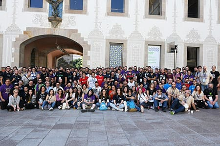
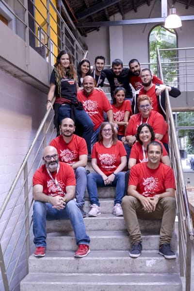

About the event / A place to share knowledge
Software Crafters Barcelona is a two day event which aims to attract and connect software development professionals, who feel passion for their work and share the values and principles of the Crafters movement.
It aspires to be a meeting place that facilitates the magic of learning, teaching and collaboration, where participants create a gratifying and enriching experience.
It doesn't matter who you are, your knowledge level or your favorite programming
language. We encourage you to participate if you:
- are passionate about software.
- want to be involved, or are already involved, in the Software Crafters
movement.
- want to share your knowledge, experience, or skills.
- enjoy learning by helping others and believe that sharing is key to your
own progress.
In addition to technical contents, it will be fun. There will be beers, and
we'll have stimulating conversations late into the night.
Software Crafters Barcelona is an opportunity to meet new friends, face new
challenges while learning and further improve your skills. Join us!

{kind=link}

{kind=link}

{kind=link}
Schedule
Opening
10:00 - 10:40

Coding with dinosaurs: 5 tips about using functional programming patterns you might want to know
There are great teams out there who are obsessed with the idea of breaking down complex problems into smaller, easier to solve problems. Many of them are choosing a combination of agile and domain-driven design, where this idea is predominant. Local reasoning is a good way to tackle a problem, as long as we don't lose sight of the bigger picture: the purpose for which we write a program. Achieving this global vision is challenging and requires some strategy. We simply cannot catch up with a smart idea plus some luck. It forces us to learn new ways to give more weight to the purpose than to the details of implementation.
This talk will challenge some best practices that are generally accepted, and will present others that in some cases could be superior in outcome. This story is part of my own journey transitioning from object-oriented to functional programming. A journey that took me to scrutinise some of the habits that I learned in the past and understand them in depth. I hope I can foster an open-minded discussion that will give everyone more options for their future decisions.
I will present code examples, mostly in Java and Scala.
Break
Entiende tus sistemas con OpenTelemetry
Nuestros sistemas pueden ser cada vez más complejos. Ante esta realidad, la observabilidad es un componente esencial para comprender el comportamiento de dichos sistemas y garantizar su fiabilidad.
Trataremos la evolución de la observabilidad en un entorno real y veremos cómo hemos evolucionado para llegar a entender nuestros sistemas.
Esperamos que tras esta sesión, todo el mundo se anime a aprovechar la flexibilidad de OpenTelemetry para probar en sus respectivos proyectos, y empezar o continuar su observability journey con un level up en el árbol de skills.


12:30 - 13:10
Data Engineering: Building your BI infrastructure from scratch
In every startup life-cycle, there is a moment where having information about your customers is the only way to keep growing. At this point, you need a BI team that can give you the insights to understand your customers better.
So...How can we tackle this from a Data Engineer perspective? We will talk about data ingestion, data lakes, data warehouses, ETLs... and much more.
Lunch
Open Space!
Break
Open Space!
Closing
Registration
Opening
- - -
Break
Vertical Slicing - unlearn what you know about user stories and start delivering in an iterative and incremental way. (Workshop)
Let's split user stories, let's make smaller user stories... we have all heard this over and over again, but in my experience, it is one of the most complex practices to carry out.
It is probably because we have heard a thousand versions and seen many theoretical exercises, but we do not focus on the origin and final intention, the iterative and incremental delivery.
I will try to explain how to unlearn what we know about splitting user stories and focus on delivering iteratively and incrementally. We will try to see how to divide our work forgetting about epics, user stories, tasks... just looking for what can be the smallest increments that give us feedback to deliver more, better and faster."

Lunch
Open Space!
Break
Open Space!
Closing
Registration
Opening
10:00 - 10:40
From OOP (Object Oriented Programming) to FP (Functional Programing)
I, and many others, started our software development with structured, imperative, and object-oriented programming.
We learned OOP design patterns, composition, encapsulation, and a myriad of other words/concepts that now make total sense. But at some, I stumbled upon words like “monad”, “composition”, “arrow” or “semigroup”.
In this talk we’ll try to make sense of those intriguing words, what *is* Functional Programming, when it is useful and clear up a few myths along the way.
Join me in this beautiful journey of learning a whole new way of thinking about solving problems.
Break
11:30 - 12:10
Surviving Continuous Deployment in Distributed Systems
Most of us have heard of Trunk Based Development, Continuous Deployment and Microservices. Maybe even convinced our stakeholders it was time to put them into practice. But how will the life of developers look like at the end of the journey? As each change we make goes immediately to production and has the potential to affect a complex web of services, it is time to evolve the day to day way we release our software. At ThoughtWorks we've been facing these challenges with many of our enterprise scale clients. In this talk I want to share our approach of incremental, safe releases.
Desarrollos accidentalmente complejos y complejamente accidentados
Aunque siempre intentamos hacerlo lo mejor que podemos, hay situaciones que nos pueden llevar a dificultar la mantenibilidad y evolución de nuestros desarollos. Ya sea por introducir complejidad accidental, por no explorar lo suficiente el ámbito del problema o debido al uso de patrones y tecnologías por gusto o por costumbre esto genera sufrimiento a largo plazo en los equipos.
En esta charla veremos ejemplos representativos de estos escenarios y exploraremos posibles alternativas que nos pueden ayudar en cada caso. Hablaremos de Microservicios, CQRS, patrones de resiliencia, streams de mensajes y otra serie de buzzwords, y lo haremos tanto desde la perspectiva del abuso como de la del “buen” uso.

Lunch
Tu feedback genera bugs en producción
La comunicación en las organizaciones es vital. Trabajamos en equipo y el feedback es una herramienta muy poderosa para crecer colectiva e individualmente. Pero, un gran poder conlleva una gran responsabilidad, ¿no? Un mal uso, puede llegar a ser algo banal o incluso tóxico. ¿Dónde está el "seniority" en dar feedback? Nos resulta difícil encontrar dónde o cuándo nos han dado herramientas o formación para recibir y/o dar feedback. ¿Por qué nos formamos técnicamente pero olvidamos hacerlo en soft skills? Creemos que, además, el feedback está directamente relacionado con bugs en producción: Loops de feedback largos, confianza en los equipos, confianza en nosotros mismos,... En esta charla queremos darle una vuelta a la cultura del feedback: ver su importancia, ver cómo nos hace crecer y como hace crecer a las organizaciones, los proyectos y el producto, pero también de toxicidad, de ciclos de feedback y de por qué creemos que está directamente relacionado con bugs en producción. Dar y/o recibir feedback es fácil, pero saber hacerlo no tanto.

¡Desarrollar con legacy mola!
¿Cómo gestionar 20 años de legacy?
¿Qué cambios necesita una organización para cambiar el mindset?
¿Es la primera vez que oímos el concepto ""clean code"", por donde empezamos?
En esta charla, Ramon Balaguer y Vicenç García nos explicaran como desde Voxel, una empresa con 23 años de software a sus espaldas, se está intentando mejorar la agilidad técnica de sus equipos y servicios para ofrecer el mejor servicio posible a sus clientes.


Closing
Registration
Opening
- - -
Break
11:30 - 13:25 (2 hours)
Implement search for your application using
Elasticsearch. (Workshop)
We are proposing a workshop of about 2h time, adaptable if needed. The idea is to setup a simple search application that uses text search, grouping, date filtering and ordering.
Assistants will only need a laptop with Docker installed as we will create an environment using docker-compose in which Elasticsearch and Elastic App Search will run.
This workshop is relying on Elastic Search UI (https://github.com/elastic/search-ui) to create a React based search interface that supports a great user search interface both for web or mobile usage.
All features of the Elastic stack that are presented here are available for free.


Lunch
15:00 - 16:55 (2 hours)
Minotaurs, Unicorns, and the Electric Bill. (Workshop)
The Spanish Electric market is a complete maze and the end customer electric bill a hieroglyph. In this workshop we'll do a quick overview of the bill and write some code to help us understand how each attendee's household consumes electric energy.

Closing
Diversity Matters / We welcome you
In the Software Crafters Barcelona movement brogrammers do not prevail, and year after year the organizational committee becomes more diverse.
We claim the Software Crafter movement as inclusive, because we know that diverse teams develop better software. That's why we want to make a clear invitation to collectives often underrepresented at tech events.
Women, migrants, racialized people, functional diversity folks, LGBTQIA+, etc: not only have we reserved tickets for you, but we also have a designated budget to facilitate your participation in the event. If you have any questions or suggestions, just drop us an email at SoftwareCraftersBcn [at] gmail.com or DM us on Twitter @bcnswcraft. We'll welcome you with open arms!
Covid-19 measures
Safety measures against COVID-19

Mandatory indoor use of the entire venue

Take off the mask only on the specific time to eat or drink

Remember to keep your distance among the people attending the event

Use the hand-sanitizer dispensers available
It is mandatory to leave the rooms after each talk to facilitate cleaning
All spaces are constantly ventilated
Code of Conduct/ Don't be a jerk!
General
All attendees, speakers, sponsors and volunteers at our conference are required to agree with the following code of conduct. Organizers will enforce this code throughout the event. We are expecting cooperation from all participants to help ensuring a safe environment for everybody.
Location
Hotels
There is an important number of hotels near our event. Furthermore, for a cheap solution airbnb can provide you with a relaxing place to sleep. And if you need free accomodation, we recommend you to check couchsurfing. It’s a welcoming platform and there are a lot of great hosts in Barcelona, we know it from our own experience.
Organisation / Many hands make light work
This event would be impossible without the help (and time) of all its volunteers.
We welcome everyone as we believe that a more diverse environment will create a better
event for all the community
If you are interested in helping to organise this years' event or the next one,
do not hesitate to contact us at softwarecraftersbcn@gmail.com